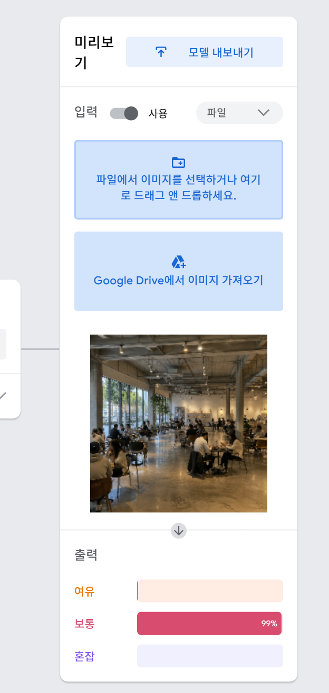
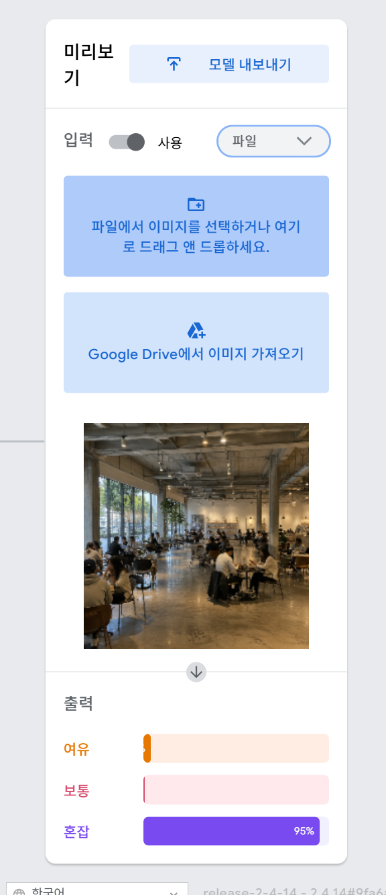
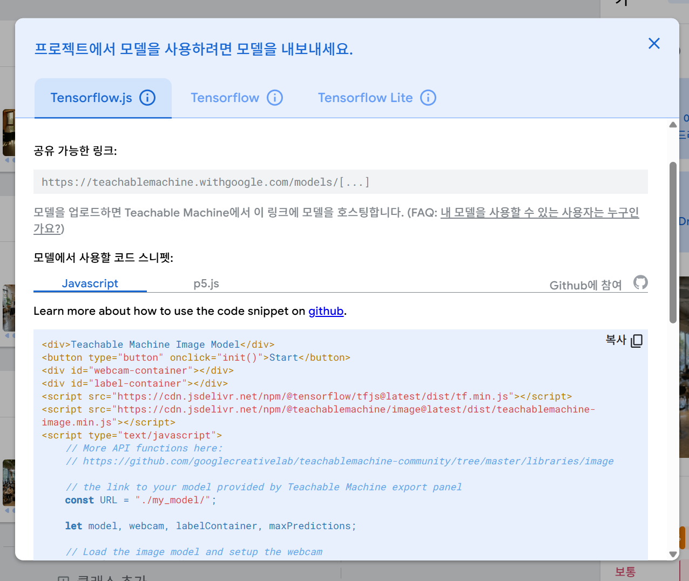

카페 내부 사진을 바탕으로 좌석 혼잡 상태를 여유, 보통, 혼잡의 세 단계로 분류하는 AI 프로젝트입니다.
Google Teachable Machine을 사용하여 여유, 보통, 혼잡 세 개의 클래스를 만들고 각 상황에 맞는 카페 이미지를 학습 데이터로 사용했습니다. 1차 학습에서는 각 클래스별로 12장의 이미지를 사용하여 총 36장의 데이터로 모델을 학습했습니다.

테스트 과정에서 실제로는 혼잡한 카페 사진이었지만 AI가 보통 99%로 잘못 분류하는 문제가 발생했습니다. 해당 사진은 카페 공간이 넓어 사진 속에 빈 공간이 많이 보였습니다.

오분류를 줄이기 위해 넓은 공간이면서 손님이 많은 혼잡 카페 사진 4장을 혼잡 클래스에 추가한 뒤 모델을 다시 학습했습니다. 그 결과 같은 테스트 사진을 혼잡 95%로 올바르게 분류했습니다.| 구분 | 개선 전 | 개선 후 |
|---|---|---|
| 실제 분류 | 혼잡 | 혼잡 |
| AI 예측 결과 | 보통 99% | 혼잡 95% |
| 분류 성공 여부 | 실패 | 성공 |
Teachable Machine에서 학습한 모델을 TensorFlow.js 등의 형식으로 내보낼 수 있는 기능을 확인했습니다.

이번 프로젝트에서 사용한 노코드 AI 도구입니다.
제작자: 안혜정
학부연구동아리 8주차 활동으로 제작한 웹페이지입니다.